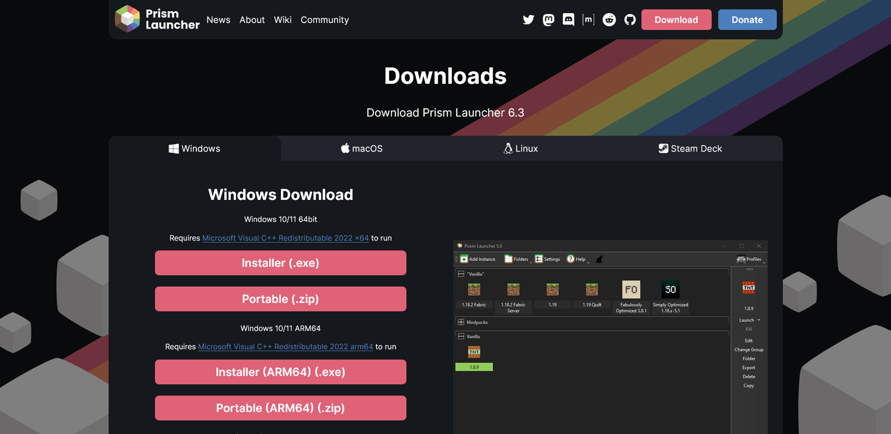

Introduction
A private Minecraft Forge Modpack, by
Vendyll “Varg” Allister, containing 171 mods
centred around Exploration & Dungeons, New Biomes, Decoration, Tech, Create, Magic, Food & Crops, Tinkers' Construct, Backpacks, and various smaller
ones. Done with optimisation in mind and only needing 5 GB of RAM, even PCs with integrated graphics can play!
Website and icon of the
modpack are done by Zen.
Installation
Let's get to installing the modpack shall we?
First, you need to download and install Eclipse Adoptium JDK found in this link here:
https://adoptium.net/ (Don't worry, folks! Clicking on all links opens a new tab.)
Then, for the Minecraft Launcher, we will be using Prism Launcher:
Installer.exe will install the Launcher automatically. (When the Launcher needs to be updated, you can download a new version of the installer and install it.)
Go through the necessary steps in the installer and launch the game.
Portable.exe allows you to unzip the entire Launcher into any folder but updating the launcher will be
hard.
(This would require migrating necessary files from the old version to the new one.)
Once you launch the Prism Launcher, select the Language, click Next.
Assuming you already installed Eclipse Adoptium JDK in 1, select the latest Java 17 version (mine is 17.0.5). Either the pathway or “javaw” works as long as the correct version is selected.
Then for Memory allocation, make sure to put 5120 MiB for both (this is important). You may input higher or lower as you like as this is just default allocation for all instances. Click Finish.
Next, click Settings:
(You may change the Theme and Cat to your liking)
Select Java¹, then in JVM arguments², select, copy, then paste the following text to the JVM arguments textbox:
-XX:+UseG1GC -XX:+ParallelRefProcEnabled -XX:MaxGCPauseMillis=200 -XX:+UnlockExperimentalVMOptions -XX:+DisableExplicitGC -XX:+AlwaysPreTouch -XX:G1NewSizePercent=30 -XX:G1MaxNewSizePercent=40 -XX:G1HeapRegionSize=8M -XX:G1ReservePercent=20 -XX:G1HeapWastePercent=5 -XX:G1MixedGCCountTarget=4 -XX:InitiatingHeapOccupancyPercent=15 -XX:G1MixedGCLiveThresholdPercent=90 -XX:G1RSetUpdatingPauseTimePercent=5 -XX:SurvivorRatio=32 -XX:+PerfDisableSharedMem -XX:MaxTenuringThreshold=1 -Dusing.aikars.flags=https://mcflags.emc.gs/ -Daikars.new.flags=true
Select Accounts¹, Add Microsoft² (or Mojang for legacy), then either copy link³ᵃ and code³ᵃ, OR open page and copy code³ᵇ. Then login your Microsoft account linked to your Minecraft account.
Then your account should show up like this.
Download zemetro.zip and remember the download location.
Close Settings then Add Instance¹, Import from Zip², and click on Browse³. Find zemetro.zip and open it. (You may assign the modpack to a Group of any name like “Forge” or rename the modpack to anything else)
And you are done! Just double click the instance or click “Launch” and the modpack will launch automatically with all settings configured. Mods and resource packs will automatically be downloaded for first time launch. If there's a new update, the modpack will automatically update without your input whenever you launch the instance.
After launching, some of the settings and some keybinds have been set but you may change them as you desire.
Enjoy!
ATLauncher, MultiMC, and Poly Launcher MAY work but are untested.
Tlauncher, Curseforge Launcher, and Default Minecraft Launcher are unsupported.
If you still wish to use any of those, you would still have to use Prism/Poly/MultiMC/ATLauncher to get the contents then transfer
the necessary Mods, Config, Resource Pack, and Settings over to your desired launcher and do it again every time there's an update.
TLauncher is completely unsupported in any circumstance as this is an online-only server.
List of Mods
¹If you wish to use shaders, install Oculus
You may procure the full list of mods by contacting Varg
Highlights
In order to give the player a sense of direction and a way to know what they can do in this modpack, I've highlighted the more prominent mods and given a little explanation to each one of them. You can click on the title of the mod to go to the modpage to get a better description or images of it.
Lootr is a mod where every player gets their own unique loot from the same chest (ie. Instanced Loot).
Unopened chests will have yellow edges.

Opened chests will have blue edges and a gem attached to the top. This is player specific so anyone else looking at the same chest that they did not touch will be yellow like the above.
Below are screenshots of two separate players opening the same Lootr chest. Each having their own different loot.
Player A:

Player B:
Various dungeons will pop up in the landscape for you to conquer. Some are easier. Others, will be the fight of your life.
The End is Near. The way to get to the End is now overhauled whereby you have to collect different types of ender pearls scattered throughout the world.
Immersive Aircraft add different aircraft that you can make and fly in to aid with your exploration.
Take for example the gyrodyne below. It can seat another player too.
Keybinds are found below. “r” to dismount. Rebind as you wish.
(You can go to the Key Binds menu and select “Category” and type in “Aircraft” to filter out that category. You can also do this for keys.)
Most people should know this. Adds a whole range of biomes. In addition to BOP, there are other smaller biome mods that are mixed into this.
A food mod with new crops and better quality food. Eating better food means better effects so try them out and see it for yourself! Some foods can be placed down like in the image.
Pam's Harvestcraft has much more food variety but does not have the same quality as Farmer's Delight. It has a huge range of crops and food alike but due to the sheer amount, I'll only screenshot the item page of the mod below.
Just like what the mod name suggests, Architect's Palette adds a palette of blocks designed to complement and shape your builds. Best to check the modpage for the better description and images.
sketch_makaw has various mods that relate to building. It is best to check out the projects page for the individual mods. (The only mods
excluded from that projects list are any related to “TFC”.)
Of interest is Macaw's Bridges, Roofs, & Furniture.
Adds furniture that is both functional and beautiful. Look to the modpage for description and images.
You can create your own custom tools from materials and alloys. Mod comes with book guides.
When you see it, you'll know. (video link)
Has an in-game tutorial demonstration for most items and blocks. Check it out by hovering your mouse over a Create item/block and holding “w” until the demo pops out.
Jesse, we need to cook ores.
Source: @adidaskote and @akanehozuki8585
The thermal series mods are focused around processing materials and automation. Best to check an external resource for it.
When you die, you spawn a tombstone that will keep your items. Mod offers a lot more than you would expect.
I honestly don't know much about this mod other than it being magic, lol. You can check the modpage out or go through it in-game.
I don't know this either other than magic, go check the link out too.
A late-game tech-based storage mod where you can yeet items into Google servers. You may want to start with finding this meteor crash scattered throughout the world. Documentation can be found in the link.
A modern remake of Storage Drawers and functions in mostly the exact same way. In this mod, you can store single-typed items into a drawer like below. There are different types of drawers and they can be made out of different wood materials as shown. Along with upgrades that increase capacity or give a function.
This backpack mod has upgradeable tiers, from basic and iron all the way to Netherite giving the most inventory space. This along with a slew of functional and useful upgrades. Not to mention it works both from the chest slot and inside your inventory through keybinds. Do note that both backpack mods use the “b” keybind.
A simpler version of Sophisticated Backpack with essential accessories such as storing specifically tools and being able to swap them from the main hand with a keybind. The backpack can be upgraded into a cosmetic model like the wolf backpack below. However, there are some that give effects like the bee backpack. With the bee backpack, your attacks will cause poison to enemies. Do note that both backpack mods use the “b” keybind.
Woodcutter just like the stonecutter.
In-game menu for selectively muffling sounds. Best to check modpage out for full description.
Very simple mod where screenshotting with “F2” also copies the screenshot to your clipboard so you can easily paste it anywhere else.
The most important mod of any modpack in Minecraft is the ability of looking up any item in the game, checking recipes for any items or where to get them, and checking what the item can be used for. JEI provides all of that functionality and is essential in providing a means for the player to navigate through a modpack. Thus, it is encouraged to go over to the modpage and learn the controls and features of the mod.
By pressing “F7”, gives an overlay on the ground showing whether a mob would spawn on it or not as shown below.
Mouse tweaks add new mechanics for moving items in your inventory. Check out the modpage for the full description and tutorial.
This is the texture pack that this modpack is using. It will be in-game so you'll see it anyways but if you're curious, you can still check the modpages.
Bug Warning
Word of warning that since I alone took my sweet time to make, curate and compile this modpack, I have tried my best to prevent and squash as many
bugs that I can find and fix with some help. Launching this modpack officially is bound to come across new bugs.
For instance, in testing the modpack with
Tora, we came across a (vanilla) bug related to
Treasure Maps whereby the Player opens a chest for the first time containing it, it searches for the relevant structure but that would potentially
cause the server to crash. It's now (maybe) fixed with
AsyncLocator.
Hence, going forward, I encourage all Players to look out passively for bugs. If you come across one, and you can reproduce it, report it to Varg. If
you crash, send the crash report to me. Using Oculus (shaders) is also buggy in some ways so use it at your own risk. I will still try to help with
it.
External Resources
Stuff that are complicated like Mekanism should be given a tutorial series AE2, etc. etc.
Basically, as much as the ideal world would be to have a quest + guide book to lead all players in a familiar direction or as a tutorial, it is
extremely, extremely time consuming and therefore will not be done. Instead, players are encouraged to look into mods on their own, as well as
checking any tutorials and what not with the above as a basis on where to look for (eg. Create Train Tutorial).
The modpack should not be rushed as fast as possible as currently the server is rented for at least a month until either interests die down or Tora
or anyone else runs out of money. Hence, players should and are encouraged to take as much time as they would want with their own pacing. There is no
rush to “speedrun” to endgame.
If you came this far reading everything, congratulations!
This website was originally done as a “simple” tutorial on how to install the modpack as well as listing out the features of the modpack. The
entirety of this page is built with blood, bones, and tears of both Zen and Varg. Every word, every section, every detail was deliberate.
We thank you for reading any word written here. Even if you came here to just yoink the modpack and immediately leave, that is fine. This was our fun
little project for but a few days. We are proud to present this to anyone touching this link.
Zen and Varg